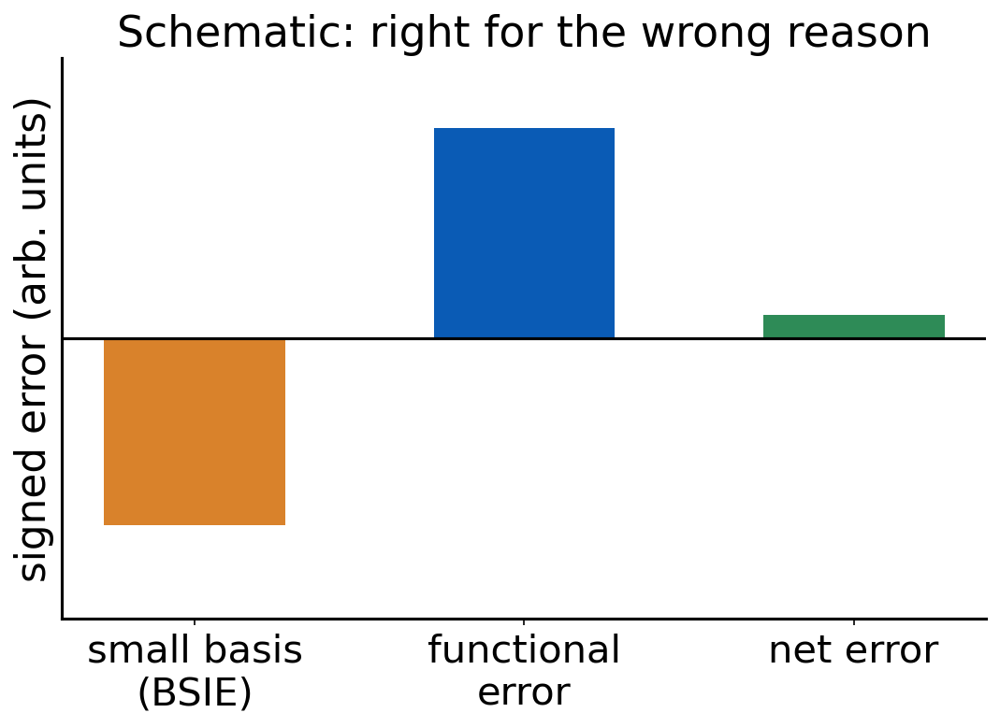

Lecture 10 · Debrief Exp. 5 · Basis-set error versus functional error
Total error, error cancellation, and why B3LYP/6-31G* worked; then Experiment 6
Advanced Physical Chemistry · Florida Institute of Technology
Debrief: Experiment 5
Your results
[Live: open Class results → Experiment 5 heatmap]
- Signed errors for 16 methods on reactions 5a–5d
- Which reaction has the largest errors in kcal/mol? In percent?
[Insert class plot: relative-error chart]
[Insert class plot: Experiment 5 relative error (|error| / |reference|) per method and reaction]
[Insert class plot: easy → hard across Experiments 3–5]
[Insert class plot: mean absolute error per method in Experiments 3, 4 and 5 side by side (the “easy → hard” chart), with best overall method highlighted]
What you probably saw: absolute versus relative
- 5c (H₂SO₄ atomization) gives the biggest errors in kcal/mol
- Relative to a reference near 600 kcal/mol, that same error may be small
- A 2 kcal/mol miss on 5a (reference −58.7) is a bigger fraction
- Which reaction is “hardest” depends on how you measure
Which rungs survive
- Errors increase from Experiment 3 to 5 for most methods
- Hartree–Fock typically fails on atomization (missing correlation)
- Hybrids and modern meta-GGAs tend to hold up better than LDA and plain GGAs
- The ranking is reaction-dependent: no method wins everywhere
D4 does not fix everything
- -D4 adds dispersion
- It does not cure static correlation (ozone) or self-interaction error
- In these reactions, -D4 can leave errors unchanged or even enlarge them
- Why? A dispersion term cannot repair a missing electronic effect
CaO spotlight
- CaO is in the training data of some functionals
- A good result for a training-set molecule is not evidence of transferability
- It shows the functional can reproduce what it was fitted to
- Judge a functional on data it has never seen
Easy → hard: errors grow, rankings shuffle, and a functional’s own training set is a poor test.
Basis-set error and functional error
Total error has parts
\[ \text{error} \;=\; \text{method (functional) error} \;+\; \text{basis-set error} \;+\; \text{other} \]
- Method error: the approximation to E_xc
- Basis-set error: BSIE, from finite basis (class 2)
- Other: grid, SCF convergence, geometry, thermal effects (later classes)
- We usually see only the sum
Error cancellation between them

- Errors of opposite sign can cancel
- A small total error can hide two large errors
- Change one ingredient and the agreement may vanish
Quick question
A small basis set with a given functional gives a result closer to the reference than the large basis.
Is the small basis “better”?
Not necessarily. The result may be right for the wrong reason: basis-set error cancels functional error. A different functional or reaction may expose it.
BSIE and BSSE
- BSIE: incompleteness of the basis. Energies are too high, differences too inaccurate
- BSSE: a fragment (or a molecule) borrows functions from neighbors, binding appears too strong
- Small basis sets have large BSIE and BSSE, and both usually go in the same direction for binding: more binding
- Counterpoise correction: compute fragments in the full dimer basis (definition only, here)
Why B3LYP/6-31G* became so common
- 1990s: cheap enough for real molecules
- Built into widely used programs as a default
- Most-cited papers: huge citation numbers
- It often looked good on organic chemistry benchmarks
Right for the wrong reasons
- B3LYP lacks dispersion and tends to underbind noncovalent contacts
- 6-31G* has large BSSE and BSIE and tends to overbind
- The two partly cancel in many organic comparisons (Kruse, Goerigk, Grimme 2012)
- Fixing one ingredient without the other can remove the agreement
Not all double-ζ sets are equal
Four double-ζ sets:
- 6-31G*
- def2-SVP
- cc-pVDZ
- pc-1
- Different construction, different sizes
- Number of basis functions for cyclohexene differs by set
- You will count them in Experiment 6
Report the exact basis set. “Double-ζ” is not a specification.
Experiment 6 briefing
Goal
Experiment 6: Why is the B3LYP/6-31G* Level of Theory so Successful?
- Compare small double-ζ basis sets with def2-TZVP
- B3LYP and B3LYP-D4, three reactions
- Can a small basis look better than a large one?
Reactions and methods
| Reaction | Ref. (kcal/mol) |
|---|---|
| 4a ethene + butadiene → cyclohexene | −45.4 |
| 4b n-hexane → neohexane | −2.49 |
| 5b CaO → Ca + O | 96.15 |
- Methods: B3LYP, B3LYP-D4
- Bases: 6-31G*, def2-SVP, cc-pVDZ, pc-1, and def2-TZVP (the reference level)
Jobs
- 8 molecules × 2 methods × 4 new bases = 64 new jobs
- Import the def2-TZVP results you already computed in Experiments 4 and 5
- Record the number of basis functions of every molecule
Spot the anomaly
- The site asks you to flag cells that look suspicious
- Ask: is this result better because the model is better, or because errors cancel?
- Compare against def2-TZVP first, then judge the small basis
Pitfalls
- 6-31G* is a Pople set: type the name exactly (
6-31G*) - Ca and O: same multiplicities as Experiment 5 (O triplet, Ca singlet)
- B3LYP-D4 is B3LYP with the D4 term, not a different functional
- Keep a table of N_bf per molecule per basis
Predictions to lock
- Will the double-ζ sets differ from each other?
- Which reaction will suffer most from the small basis?
- Will adding -D4 to a small basis help or hurt?
References
- Kruse, H.; Goerigk, L.; Grimme, S. J. Org. Chem. 77 (2012): why the B3LYP/6-31G* level works.
- Weigend, F.; Ahlrichs, R. Phys. Chem. Chem. Phys. 7 (2005): def2 basis sets.
- Jensen, F. J. Chem. Phys. 115 (2001): pc-n basis sets.
- Caldeweyher, E. et al. J. Chem. Phys. 147 (2017); 150 (2019): D4.

CHM 5111 · Advanced Physical Chemistry · Florida Institute of Technology